A starting point for your own data
Rhythm Log reads the Apple Health records you choose to share. A daytime profile can start with heart readings, workouts, and steps. Sleep is optional.
View this screenFollow a heart reading from the 24-hour dial to the workouts, trends, and routines around it.
Explore the story
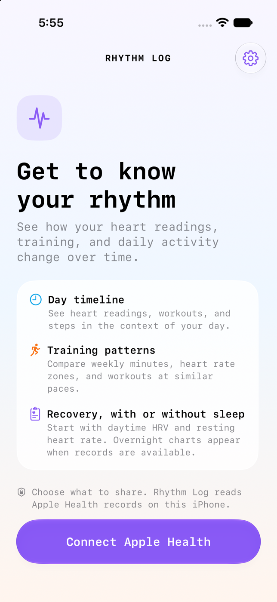
Apple Health
The experience begins with the records you already have.
Rhythm Log reads the Apple Health records you choose to share. A daytime profile can start with heart readings, workouts, and steps. Sleep is optional.
View this screenDay timeline
A single number means more when you can see the day around it.
Hourly HRV estimates sit beside sleep and workout arcs. In this sample, the dial reads 47%, and hours without observations stay blank.
View this screen
About 47% of the person’s eligible historical daily medians were higher. It’s a position within their recent history, with a separate comparison for overnight data.
View this screen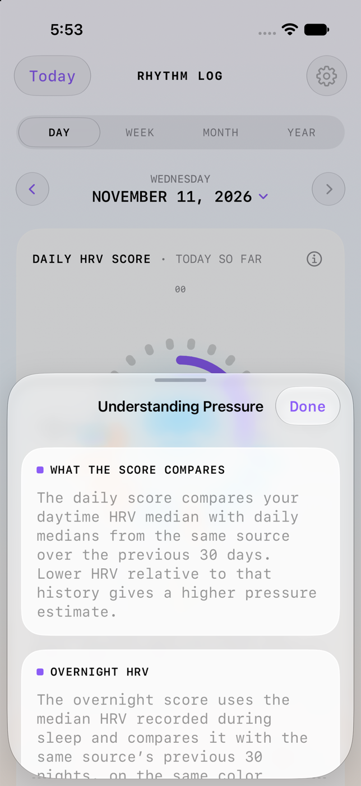
Individual dots show SDNN in milliseconds. The shaded band is the person’s daytime reference range, and the bars below summarize available readings by hour.
View this screen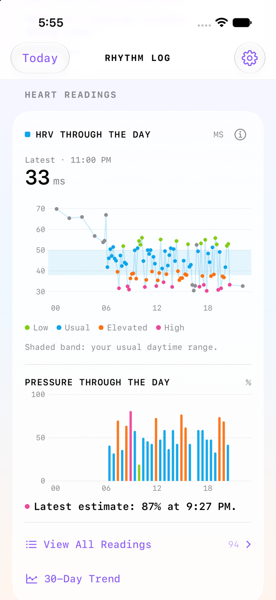
The history view puts daily medians on the same axis, so a single day can be seen alongside the past month and the number of days that contributed.
View this screen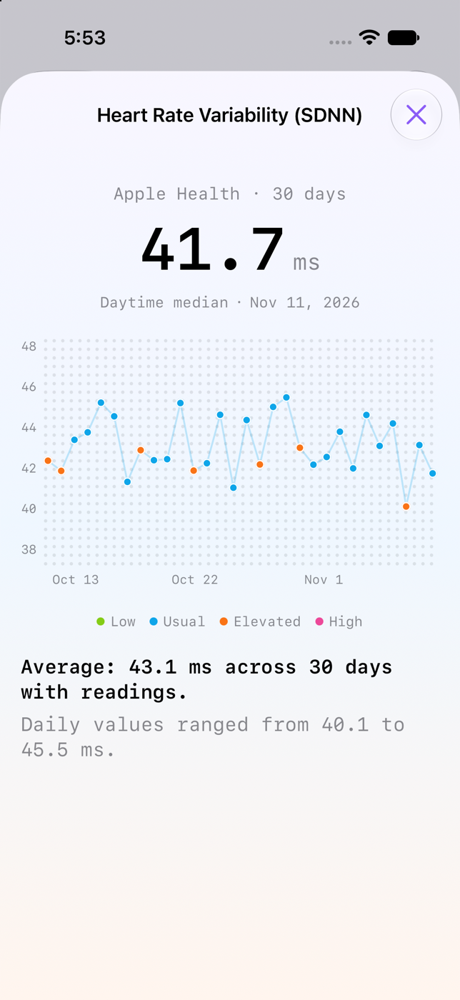
The underlying records show the time, value, and source. An unusual point can be traced back to the measurement that produced it.
View this screen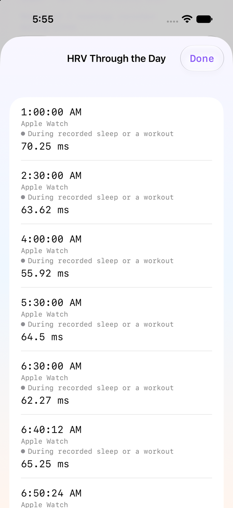
A daily step total hides the shape of the day. The hourly chart makes this sample’s short burst of activity visible.
View this screen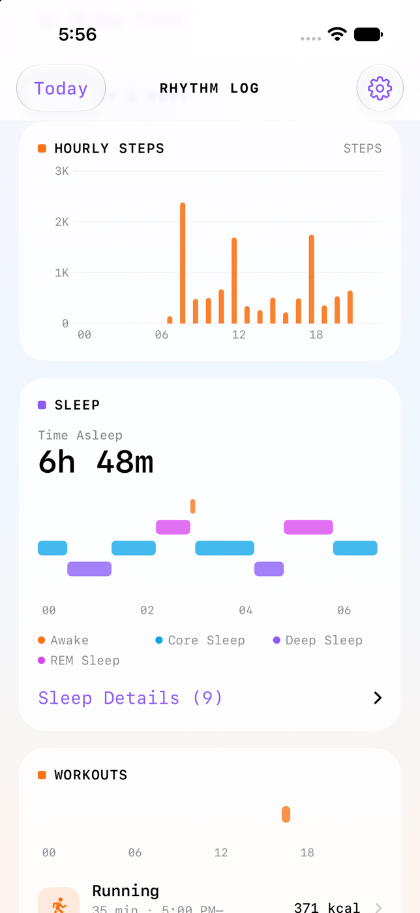
Recorded stages give the sleep arc more detail. The expanded list shows where each interval began and ended.
View this screen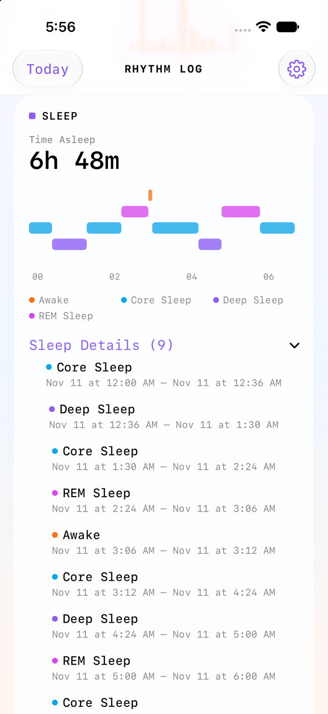
The running entry brings time, duration, and available active energy into the same timeline as heart readings.
View this screen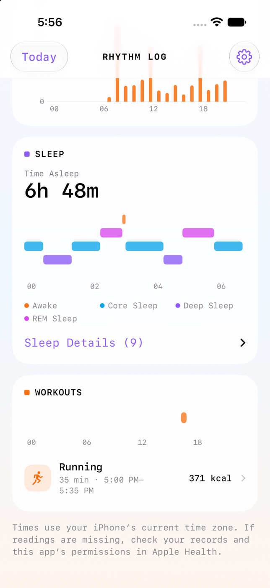
Workout detail
The summary, heart-rate trace, and monthly calendar tell different parts of the same workout story.
This sample run lasted just over 35 minutes and averaged 145 BPM. Its header shows where the session falls among runs that month.
View this screen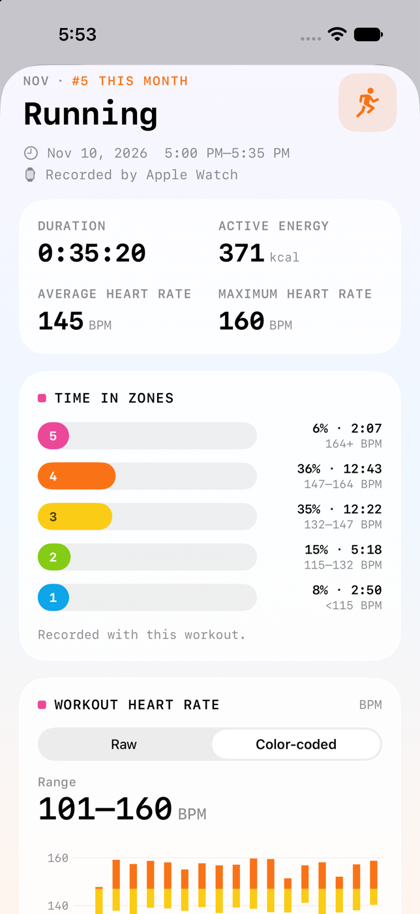
The bars show where the accounted-for time went. The note identifies whether those times came from recorded zones or estimates from heart-rate samples.
View this screen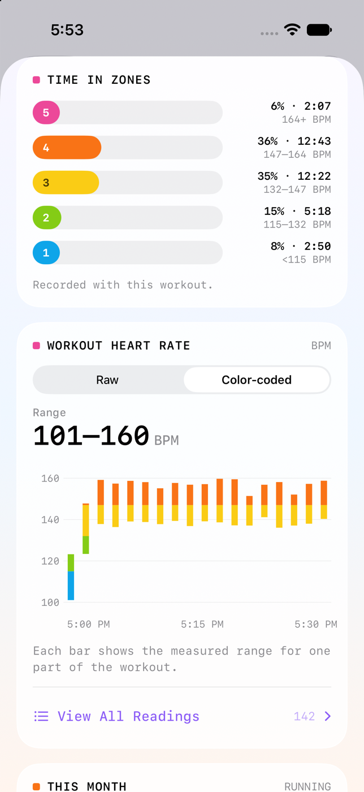
The time axis shows how heart rate changed during the session. Raw and color-coded views offer two ways to see the same available readings.
View this screen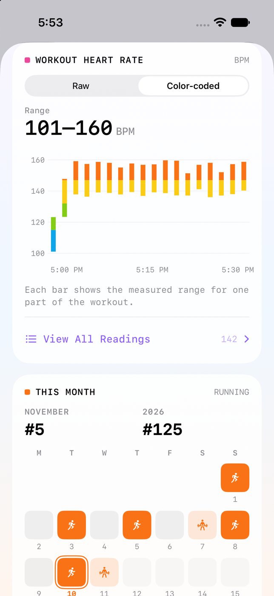
The workout calendar highlights other days with the same activity, giving this run a place in the month.
View this screen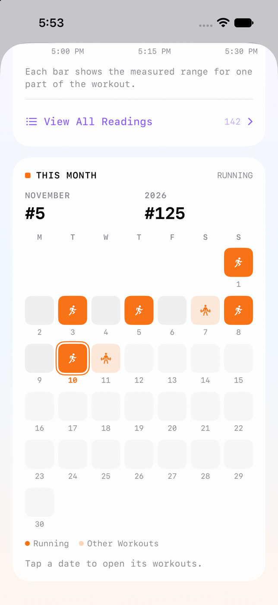
Training
A seven-day comparison leads back to the sessions that made up the total.
The sample week is lighter than the preceding seven-day block. Strength training accounts for the largest drop, visible in the sport-level comparison.
View this screen
The weekly list shows the individual runs and strength sessions that contributed to the selected block.
View this screen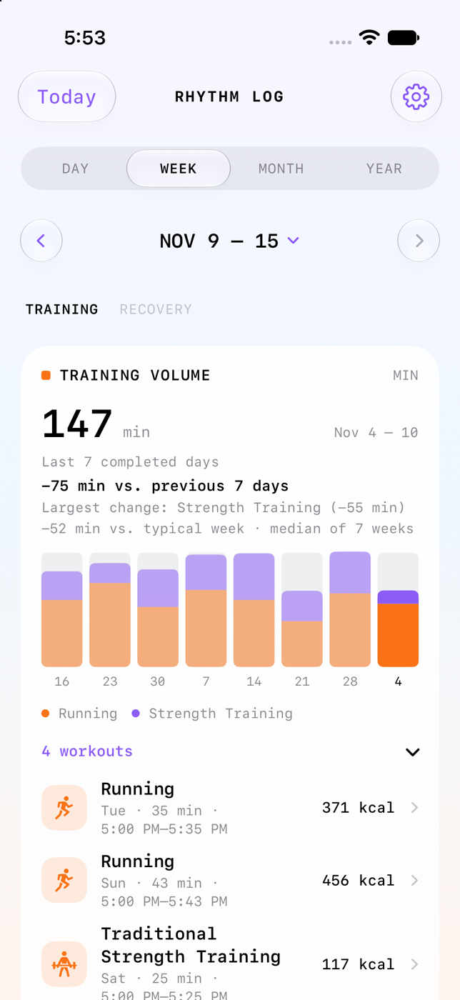
The upper plot compares heart rate at similar paces. The lower one shows how far heart rate dropped a minute after exercise, where a matched reading exists.
View this screen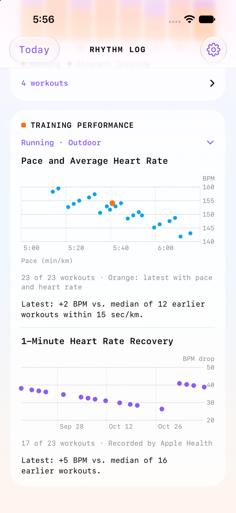
A monthly view makes clusters and gaps easier to see. Each workout day can show its main activity and total recorded minutes.
View this screen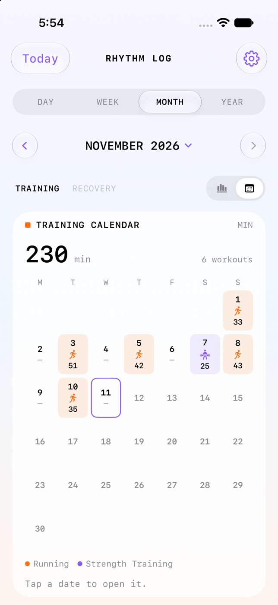
Recovery
The first two screens use a sample profile with zero sleep records. The rest show what appears when overnight data is available.
With no nights recorded, the daytime HRV series still shows measured days, a seven-day median, and the person’s recent range.
View this screen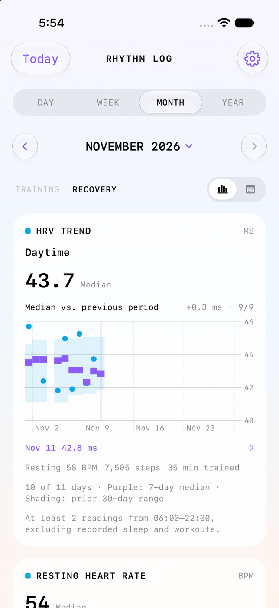
The same profile can compare resting heart rate and movement across periods. Coverage counts show how many days each comparison represents.
View this screen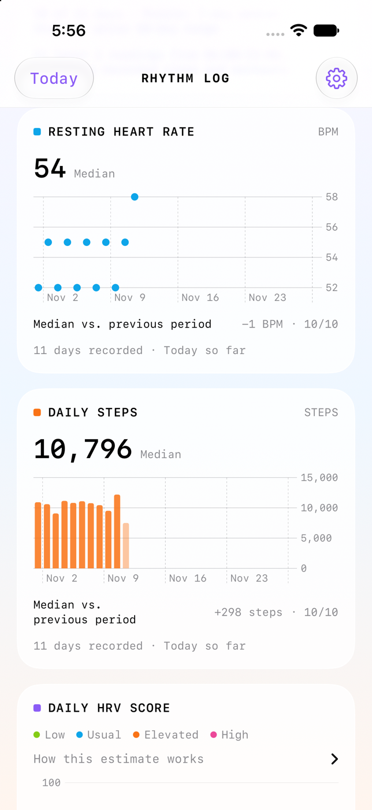
For a profile with sleep records, the wake date keeps the session together. Each row can pair its sleep timing with overnight HRV and wake-day resting heart rate.
View this screen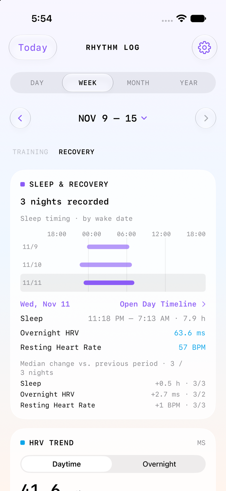
Daytime and overnight readings have their own reference histories. The night series keeps gaps where there aren’t enough measurements.
View this screen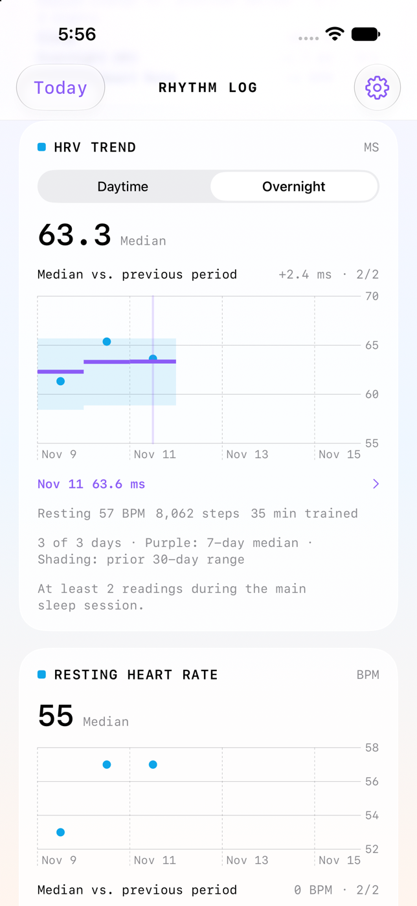
Sleep heart rate and respiratory rate share a date axis. Each uses its own units and recent personal range.
View this screen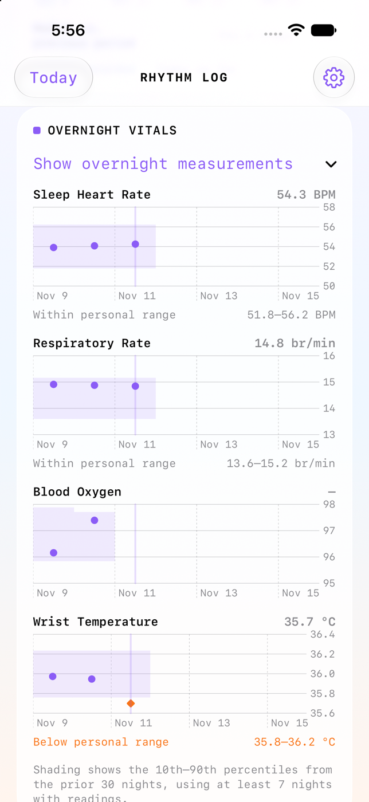
Blood oxygen and wrist temperature have separate bands. A highlight signals a difference from recent records, while a gap shows that a usable measurement was unavailable.
View this screen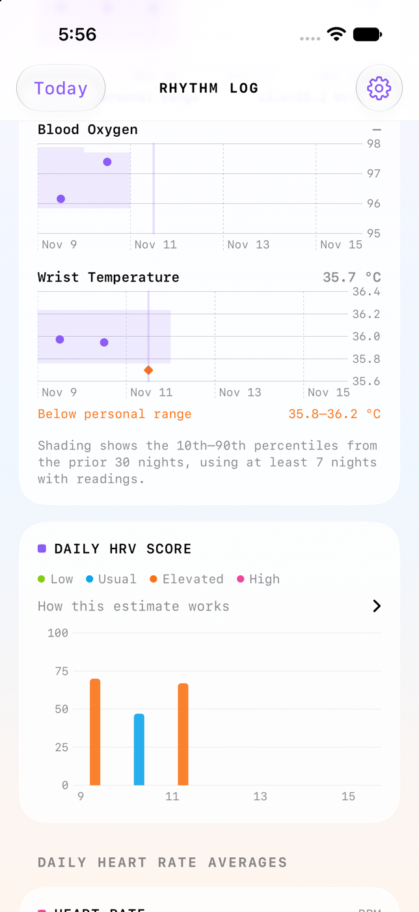
Start with the records you already have. The setup guide takes you from the project to your first day in the app.
Open the setup guide